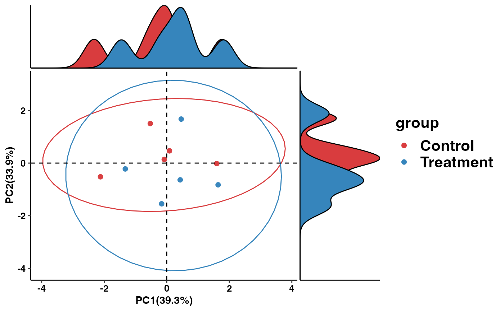
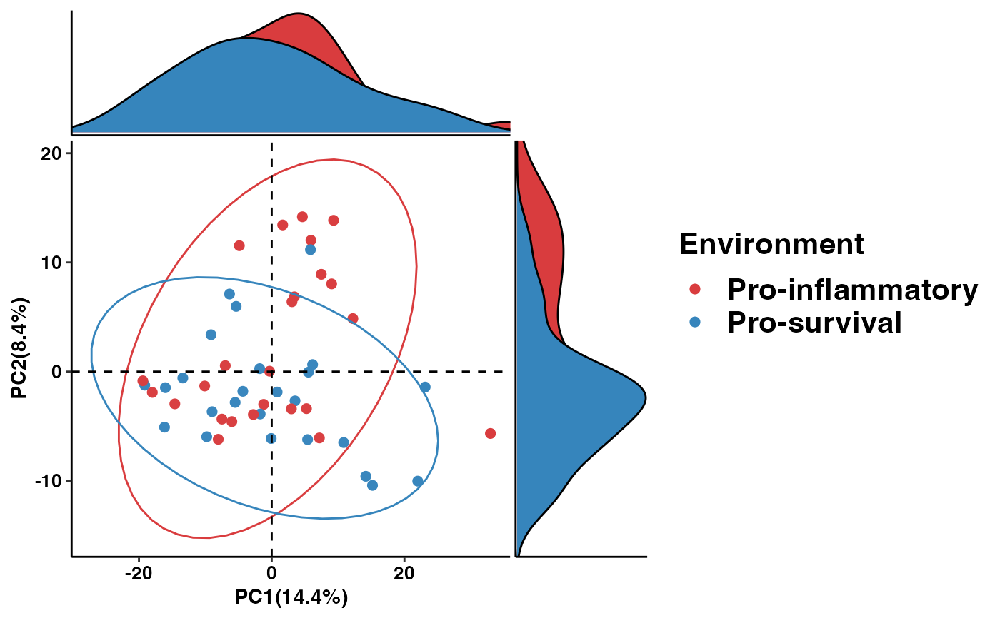

R/pathway_pca.R
pathway_pca.RdPerform Principal Component Analysis (PCA) on functional pathway abundance data and create visualizations of the PCA results.
pathway_pca(abundance, metadata, group)A data frame, predicted functional pathway abundance.
A tibble, consisting of sample information.
A character, group name.
A ggplot object showing the PCA results.
library(magrittr)
library(dplyr)
library(tibble)
# Create example functional pathway abundance data
kegg_abundance_example <- matrix(rnorm(30), nrow = 3, ncol = 10)
colnames(kegg_abundance_example) <- paste0("Sample", 1:10)
rownames(kegg_abundance_example) <- c("PathwayA", "PathwayB", "PathwayC")
# Create example metadata
# Please ensure the sample IDs in the metadata have the column name "sample_name"
metadata_example <- data.frame(sample_name = colnames(kegg_abundance_example),
group = factor(rep(c("Control", "Treatment"), each = 5)))
pca_plot <- pathway_pca(kegg_abundance_example, metadata_example, "group")
print(pca_plot)

# \donttest{
data("metacyc_abundance")
data("metadata")
pathway_pca(metacyc_abundance %>% column_to_rownames("pathway"), metadata, "Environment")

# }